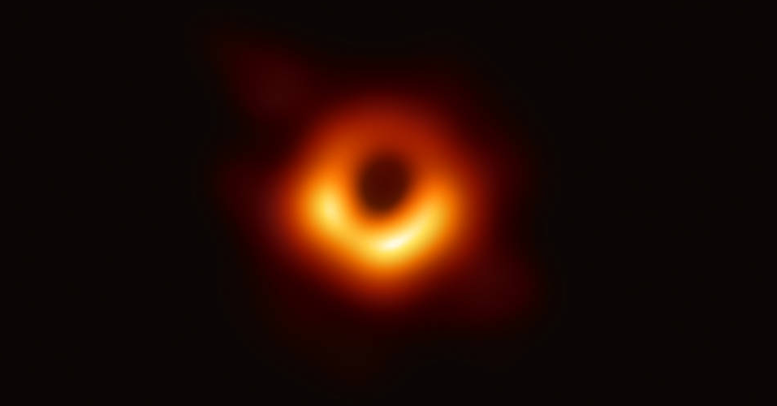
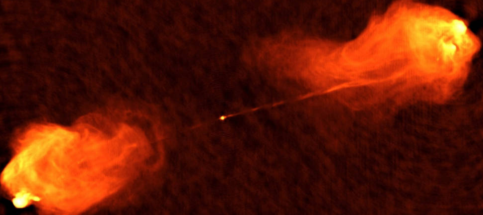

What Are Black Holes?
A black hole is an astronomical object with a gravitational pull so strong that nothing, not even light, can escape it. A black hole’s “surface,” called its event horizon, defines the boundary where the velocity needed to escape exceeds the speed of light, which is the speed limit of the cosmos. Matter and radiation fall in, but they can’t get out.
Two main classes of black holes have been extensively observed. Stellar-mass black holes with three to dozens of times the Sun’s mass are spread throughout our Milky Way galaxy, while supermassive monsters weighing 100,000 to billions of solar masses are found in the centers of most big galaxies, ours included.
Astronomers had long suspected an in-between class called intermediate-mass black holes, weighing 100 to more than 10,000 solar masses. While a handful of candidates have been identified with indirect evidence, the most convincing example to date came on May 21, 2019, when the National Science Foundation’s Laser Interferometer Gravitational-wave Observatory (LIGO), located in Livingston, Louisiana, and Hanford, Washington, detected gravitational waves from a merger of two stellar-mass black holes. This event, dubbed GW190521, resulted in a black hole weighing 142 Suns
A stellar-mass black hole forms when a star with more than 20 solar masses exhausts the nuclear fuel in its core and collapses under its own weight. The collapse triggers a supernova explosion that blows off the star’s outer layers. But if the crushed core contains more than about three times the Sun’s mass, no known force can stop its collapse to a black hole. The origin of supermassive black holes is poorly understood, but we know they exist from the very earliest days of a galaxy’s lifetime.
Once born, black holes can grow by accreting matter that falls into them, including gas stripped from neighboring stars and even other black holes.
In 2019, astronomers using the Event Horizon Telescope (EHT) — an international collaboration that networked eight ground-based radio telescopes into a single Earth-size dish — captured an image of a black hole for the first time. It appears as a dark circle silhouetted by an orbiting disk of hot, glowing matter. The supermassive black hole is located at the heart of a galaxy called M87, located about 55 million light-years away, and weighs more than 6 billion solar masses. Its event horizon extends so far it could encompass much of our solar system out to well beyond the planets.
Another important discovery related to black holes came in 2015 when scientists first detected gravitational waves, ripples in the fabric of space-time predicted a century earlier by Albert Einstein’s general theory of relativity. LIGO detected the waves from an event called GW150914, where two orbiting black holes spiraled into each other and merged 1.3 billion years ago. Since then, LIGO and other facilities have observed numerous black hole mergers via the gravitational waves they produce.
These are exciting new methods, but astronomers have been studying black holes through the various forms of light they emit for decades. Although light can’t escape a black hole’s event horizon, the enormous tidal forces in its vicinity cause nearby matter to heat up to millions of degrees and emit radio waves and X-rays. Some of the material orbiting even closer to the event horizon may be hurled out, forming jets of particles moving near the speed of light that emit radio, X-rays and gamma rays. Jets from supermassive black holes can extend hundreds of thousands of light-years into space.
NASA’s Hubble, Chandra, Swift, NuSTAR, and NICER space telescopes, as well as other missions, continue to take the measure of black holes and their environments so we can learn more about these enigmatic objects and their role in the evolution of galaxies and the universe at large.
Last Updated: Nov 23, 2020
Editor: Rob Garner